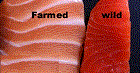

Go Easy on the Protein

Protein is a tricky nutrient in the ketogenic diet because it can actually cause you to loose progress.
Most people think that they need a lot more protein than they actually do. A common comment that is made to me is "Oh so this is like
the Adkins Diet?", which is not the case at all. The Adkins Diet restricts
Carbohydrate intake, keeping
Fat low and consuming mostly protein. You will
see a common thread and one that really works to loose weight is keep your
Carbohydrate intake low.
The problem with protein is that if you intake too much protien your body actually turns it into sugar. Your
body also recycles proteins so you don't need nearly as much as you would think. It is suggested that you keep your protein down to 8oz per serving.
Your type of protein also makes a big difference. Remember you are utilizing dietary fats for a fuel source. Salmon is wonderful if you can afford it.
An the quality of salmon can make a big difference too. Wild-caught salmon is the holy grail for protien in the ketogenic diet but it is expensive. You
can make this diet work on any budget however. Farm rasied fish are crowded into small areas and many times consume toxic elements and fecal matter. The fish
absorbs this into their system and you passively ingest it by consuming the fish. Things like mercury and parasites are a real problem with farm raised fish.
When it comes to buying poultry it is best to go to a local farm if you can and look for chicken that is farm raised and as free of hormones and antibiotics as possible.
With poultry go for legs and thighs as they have a much higher fat content than the breast does.
The same thing goes for red meat, local farms and as clear from hormones and antibiotics as possible. With steaks you want cuts like ribeyes that are nicely marbled and hamburger
that is not lean but with as high a fat content as possible.